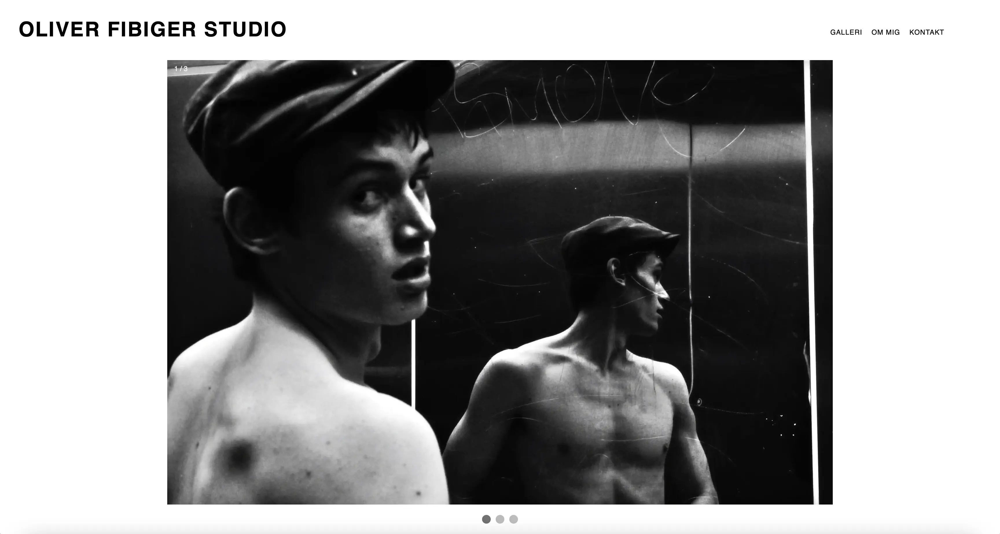

TEMA 5 grundlæggende indhold
05.01.02
Pilotsite
Se websitet her
I denne opgave skulle vi implementere vores redigerede pilotvideo (som vi redigerede i Adobe Premierer Pro), på vores pilotsite. Vi fik grundlæggende forståelse for indførsel i videoproduktion, som forarbejdet inden optagelse og postproduktion. Vi fik kendskab til video- og fotoproduktion, og forståelse for dette for bedre at kunne kommunikere professionelt med kunden.
Vi lærte at lægge video ind på et site, på to forskellige måder: gennem youtubes embed-metode og med et video tag i html. Vi anvendte centrale metoder til design af brugergrænseflader ud fra en persons passion.
05.02.01
Redesign
Se websitet her I denne opgave skulle vi redesigne en hjemmeside for en virksomhed. Vi valgte fotografen Oliver Fibiger Studio, som førhen havde en gammel fotoblog. Hertil skulle vi producere nyt layout, foto og video til sitet.
Denne opgave var den første gruppeopgave, som gjorde det klart mere udfordrerende i at kunne komme til enighed med valg af redesign, arbejdsfordeling m.m.
Min opgave blev dog at stå for ”om mig” siden, men det endte ud i, at jeg også lavede slideshowet på forsiden, samt grid på ”kontakt” siden. Derudover blev det også mig, som lavede burgermenuen. Alt dette skyldes sygdom og valg af prioriteringer fra gruppemedlemmer. Dette resulterede også i, at jeg den sidste uge af temaet, måtte blive SCRUM-master.
Vi planlagde og designede hjemmesiden ud fra virksomhedens ønsker, samt vores egne meninger, som vi havde på baggrund af vores viden indenfor brugergrænseflader, brugeroplevelsen, brugertest, brugerforståelse, samt grundlæggende principper for organisering, produktion og præsentation af indhold.